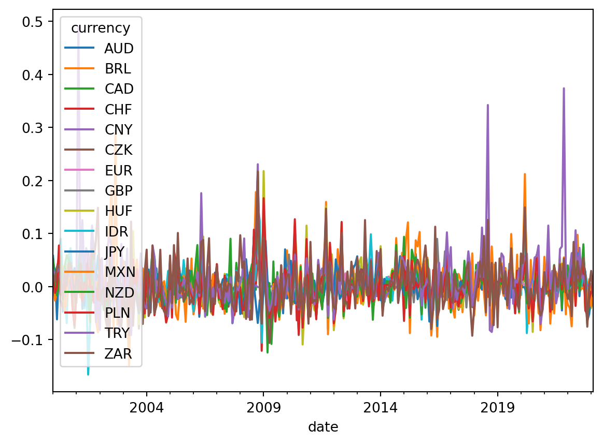

Code
import pandas as pd
import numpy as np
import matplotlib.pyplot as plt
import eurostat
from datetime import datetime
import statsmodels.api as smTiago Souza
September 11, 2022
This post is to apply a Dynamic Factor Model to uncover common trends in currencies as well as idiosyncratic shocks that some countries might be facing.
\[ \begin{aligned} x^{i}_{t} = \alpha^{i} + \sum_{j}{\beta^{i}_{j} f_{j} + \varepsilon^{i}_{t}}, \quad i = 1 \dots n \end{aligned} \]
df = eurostat.get_data_df('ert_bil_eur_d', flags=False)
df.rename(columns = {'currency\\TIME_PERIOD': 'currency'}, inplace = True)
list_statinfo = ['AVG']
list_currency = ['AUD', 'BRL', 'CAD', 'CHF', 'CNY', 'CZK', 'GBP', 'HUF', 'IDR', \
'JPY', 'MXN', 'NZD', 'PLN', 'TRY', 'USD', 'ZAR']
df = df[(df['statinfo'].isin(list_statinfo)) & \
(df['currency'].isin(list_currency))]
df.drop(columns = ['unit', 'statinfo', 'freq'], inplace = True)
df = pd.melt(df, id_vars = ['currency'], var_name = 'date')
df['date'] = df['date'].apply(lambda x: datetime.strptime(x, '%Y-%m-%d'))
df.set_index(['date', 'currency'], inplace = True)
df = df.unstack()
df[('value', 'EUR')] = 1
df = df.mul(1 / df.loc[:,('value', 'USD')], axis = 0)
df.drop('USD', axis = 1, level = 'currency', inplace = True)
list_currency = [x if x != 'USD' else 'EUR' for x in list_currency]
df = df.stack()
df.reset_index(level = 'currency', inplace = True)
df = df.pivot(columns = 'currency', values = 'value')
df = df.resample('M') \
.last() \
.pct_change() \
.to_period('M')
df.tail()| currency | AUD | BRL | CAD | CHF | CNY | CZK | EUR | GBP | HUF | IDR | JPY | MXN | NZD | PLN | TRY | ZAR |
|---|---|---|---|---|---|---|---|---|---|---|---|---|---|---|---|---|
| date | ||||||||||||||||
| 2022-10 | 0.012801 | -0.014687 | -0.005591 | 0.020690 | 0.025950 | -0.019187 | -0.016744 | -0.041075 | -0.045926 | 0.024687 | 0.027813 | -0.013094 | -0.021209 | -0.045096 | 0.003488 | 0.019047 |
| 2022-11 | -0.050925 | -0.001570 | -0.011532 | -0.051361 | -0.030573 | -0.050379 | -0.044526 | -0.040387 | -0.047441 | 0.003728 | -0.064750 | -0.030038 | -0.070510 | -0.053657 | 0.000881 | -0.075902 |
| 2022-12 | -0.010287 | -0.003815 | 0.001882 | -0.027880 | -0.025268 | -0.036063 | -0.027189 | -0.002388 | -0.045126 | -0.012362 | -0.051597 | 0.013884 | -0.017598 | -0.023580 | 0.004592 | 0.001690 |
| 2023-01 | -0.029031 | -0.033104 | -0.006552 | 0.003082 | -0.020554 | -0.028644 | -0.015416 | -0.022299 | -0.039879 | -0.029556 | -0.011146 | -0.037127 | -0.011899 | -0.009484 | 0.004991 | 0.029394 |
| 2023-02 | -0.008037 | -0.008776 | -0.006382 | -0.013755 | -0.002865 | -0.012298 | -0.009509 | 0.003728 | -0.020480 | -0.007676 | -0.015258 | -0.006284 | -0.007864 | -0.013085 | 0.000304 | -0.017879 |

---
title: "FX Decomposition using Dynamic Factor Models"
author: "Tiago Souza"
date: "2022-09-11"
categories: [DFM, python]
---
```{python}
import pandas as pd
import numpy as np
import matplotlib.pyplot as plt
import eurostat
from datetime import datetime
import statsmodels.api as sm
```
This post is to apply a Dynamic Factor Model to uncover common trends in currencies as well as idiosyncratic shocks that some countries might be facing.
$$
\begin{aligned}
x^{i}_{t} = \alpha^{i} + \sum_{j}{\beta^{i}_{j} f_{j} + \varepsilon^{i}_{t}}, \quad i = 1 \dots n
\end{aligned}
$$
```{python}
df = eurostat.get_data_df('ert_bil_eur_d', flags=False)
df.rename(columns = {'currency\\TIME_PERIOD': 'currency'}, inplace = True)
list_statinfo = ['AVG']
list_currency = ['AUD', 'BRL', 'CAD', 'CHF', 'CNY', 'CZK', 'GBP', 'HUF', 'IDR', \
'JPY', 'MXN', 'NZD', 'PLN', 'TRY', 'USD', 'ZAR']
df = df[(df['statinfo'].isin(list_statinfo)) & \
(df['currency'].isin(list_currency))]
df.drop(columns = ['unit', 'statinfo', 'freq'], inplace = True)
df = pd.melt(df, id_vars = ['currency'], var_name = 'date')
df['date'] = df['date'].apply(lambda x: datetime.strptime(x, '%Y-%m-%d'))
df.set_index(['date', 'currency'], inplace = True)
df = df.unstack()
df[('value', 'EUR')] = 1
df = df.mul(1 / df.loc[:,('value', 'USD')], axis = 0)
df.drop('USD', axis = 1, level = 'currency', inplace = True)
list_currency = [x if x != 'USD' else 'EUR' for x in list_currency]
df = df.stack()
df.reset_index(level = 'currency', inplace = True)
df = df.pivot(columns = 'currency', values = 'value')
df = df.resample('M') \
.last() \
.pct_change() \
.to_period('M')
df.tail()
```
```{python}
list_em = ['BRL', 'CHF', 'CZK', 'HUF', 'IDR', 'MXN', 'PLN', 'TRY', 'ZAR']
list_dm = list(set(list_currency) - set(list_em))
factors_mq = {x: ['usd', 'em'] if x in list_em else ['usd', 'dm'] for x in list_currency}
```
```{python}
df_est = df.loc['2000-01':].copy()
df_est.plot()
plt.show()
model = sm.tsa.DynamicFactorMQ(df_est, factors=factors_mq)
result = model.fit(disp=False)
```
```{python}
df_est['factor_usd'] = result.factors.smoothed['usd']
df_est['factor_em'] = result.factors.smoothed['em']
df_est['factor_dm'] = result.factors.smoothed['dm']
df_est['factor_usd'].plot()
plt.show()
```